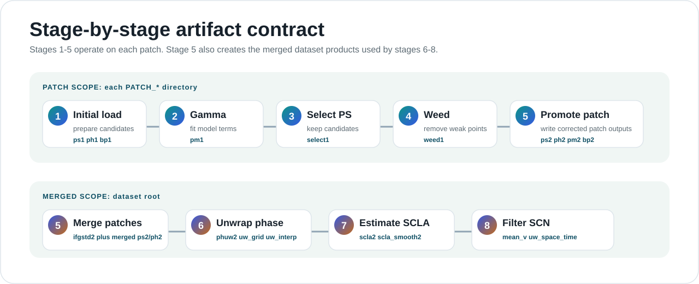

Run the Rust pipeline directly when you want the fastest native path.
The Python CLI remains the general entrypoint. The standalone pystamps-native executable is the direct Rust runner for native-only stages, coverage checks, and full-chain validation.
Build the native binary
cargo build --release -p pystamps-core --bin pystamps-nativeWheel installs can also expose pystamps-native as a console command. Source checkouts can run target/release/pystamps-native after the build above.
Native Stage Coverage
The native runner covers patch and merged scopes directly. Stage 5 appears twice because it has both patch promotion and merged aggregation behavior.

Run native stages 1 through 8
Always run on a writable copy. The command writes stage artifacts into the dataset tree.
export SOURCE_DATASET=/path/to/original_dataset
export RUN_DATASET=/path/to/native_run_dataset
rm -rf "$RUN_DATASET"
cp -a "$SOURCE_DATASET" "$RUN_DATASET"
target/release/pystamps-native run \
--native-only \
--dataset "$RUN_DATASET" \
--start-step 1 \
--end-step 8 \
--backend native \
--stage2-kernel-backend native \
--cpu-workers 0 \
--stage2-native-threads 0- --native-only requires --backend native and --stage2-kernel-backend native.
- --cpu-workers 0 and --stage2-native-threads 0 use all CPUs visible to the process.
- Set positive worker values when you need reproducible resource limits.
Preview or inspect coverage
target/release/pystamps-native run \
--dataset "$RUN_DATASET" \
--start-step 1 \
--end-step 8 \
--dry-runtarget/release/pystamps-native coverage --start-step 1 --end-step 8Both commands print JSON. Dry-run reports planned stage work; coverage reports which stage scopes are Rust-driven, native-executable, and parity-certified.
Debug one stage
target/release/pystamps-native stage 1 --patch "$RUN_DATASET/PATCH_1"
target/release/pystamps-native stage 2 --patch "$RUN_DATASET/PATCH_1"
target/release/pystamps-native stage 5 --patch "$RUN_DATASET/PATCH_1"
target/release/pystamps-native stage 5 --dataset "$RUN_DATASET"
target/release/pystamps-native stage 8 --dataset "$RUN_DATASET"Stages 1 through 5 can operate on patch data where appropriate. Stage 5 also has a merged dataset command, and stages 6 through 8 run at the dataset root.
| Stage | Native target | Command shape |
|---|---|---|
| 1-4 | Patch | stage N --patch "$RUN_DATASET/PATCH_1" |
| 5 | Patch or merged | stage 5 --patch ... or stage 5 --dataset ... |
| 6-8 | Merged | stage N --dataset "$RUN_DATASET" |
Full native validation gate
This is the release-style local gate for native execution. It builds the release binary, prepares a clean run copy, executes the chain, compares outputs, and writes reports.
make native-full-chain-verifymake native-full-chain-verify \
DATASET=/path/to/source_dataset \
GOLDEN=/path/to/reference_dataset \
RUN=/path/to/clean_run_dataset \
THREADS=8Reports are written under RUN/_native_gate_reports/, including coverage, native run output, timings, and verification results.